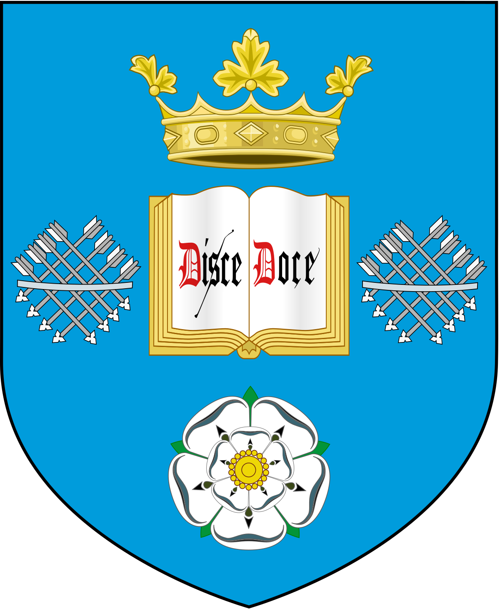

This module focuses on Software Engineering as the name obviously states.
Currently in the first semester we are programming in Ruby and we are also allocated into teams and talking to our "clients" who are third year students.
Our goal is to create a requirements document where we summarise the user stories, acceptance criteria and constraints.
This part is actually really good, because you are put on the spot and have to start thinking like a real software engineer.
It is actually much more interesting and intriguing than it sounds.
The second part is Ruby which I personally had never used before.
We learn through examples and completing tasks and the tasks are actually much more interesting than some of those online examples that you can find.
My personal favourite is the text based game, probably because I put too much effort into it.
Here are pictures of the gameplay.
Click on crest to view official module page.
